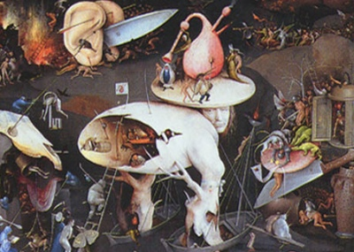

Sacred Texts Evil
Buy this Book at Amazon.com
|  | The Devils of Loudunby Edmund Goldsmid[1887] |
This is an account of the possesion of the nuns of Loudun. In 1634 the Ursuline nuns of Loudon were allegedly possessed by demons. This is one of the largest cases of mass possession in history. Father Urbain Grandier, a local priest, was interrogated under torture, convicted of being responsible for the possessions (as well as sorcery), and subsequently burned at the stake. This is a 19th century translation of the primary account of the episode, originally written in French by Des Niau in 1634.